Browse for inspiration or search with a resource in mind.
Product Design · UX Research · Shipped Product
Find it.
Save it.
Make it.
Designing continuity across discovery, organization, and download for Design Pickle's subscription library of editable creative assets.
Product Designer / UX ResearcherApproximately two yearsResponsive web product
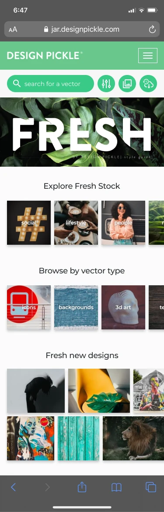
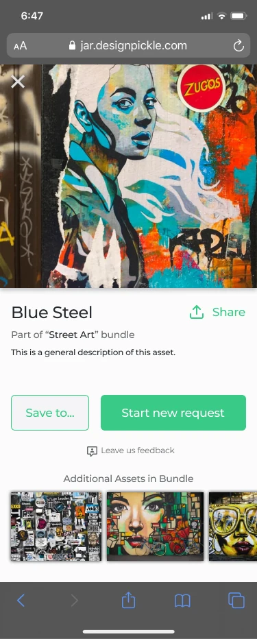
production
01 / Product context
A creative library built for more than finding files.
FreshStock was a subscription product inside the Design Pickle ecosystem, giving subscribers access to editable graphics and their source files—from icons and patterns to flyers, wallpapers, and other creative resources.
As the library grew, the experience needed to connect the full arc of use: discover an asset, evaluate it, organize it, download it, and find it again.
Inspect the asset, bundle context, and available actions.
Keep useful assets organized in named Collections.
Choose the source-file formats needed for the work.
Revisit saved or previously downloaded assets.
02 / My role
Product design ownership from research through production.
I worked across the experience with one Product Manager and approximately two to three developers, combining UX research, information architecture, interaction design, responsive UI, and implementation review.
Research and structure
User interviews, desk research, product analysis, feedback review, information architecture, and user flows.
Core product areas
Home / Library, search and discovery, Asset Detail, Collections, Individual Collection, and Downloads.
Interaction and responsive UI
Mobile behavior, navigation states, task-focused modals, and selected reusable interface patterns.
Delivery and quality
Figma handoff, developer walkthroughs, behavior clarification, build review, visual QA, and functional QA.
03 / Product challenge
Continuity across different moments of intent.
A useful asset can matter now, later, or repeatedly. The product needed to support each of those moments without making users rebuild context.
Help users move from discovering an asset to evaluating it, organizing it, accessing its source files, and finding it again later.
Discover
Support both open-ended browsing and a specific search intent.
Save
Keep a promising asset for future work without downloading it yet.
Download
Move from evaluation to the right editable file for immediate use.
Return
Retrieve assets through Collections or Download History.
04 / Research & user flows
Research informed how the library was structured and navigated.
The work combined direct user input with analysis of the product and its existing feedback. These inputs helped shape discovery, information hierarchy, navigation, filtering, organization, and download behavior.
Research inputs
I conducted or participated in research throughout the project, using evidence appropriate to the question and product stage.
Search / browse→Asset Detail→Select format→Download
Asset Detail→Save→Select Collection→Collection
Collections→Create→Edit→Delete
Download→History→Previously accessed asset
Logged-in experience→Expanded menu→Collections / Downloads / account
05 / Core journeys
Three journeys, one continuous product experience.
Discovery, organization, and download were designed as connected paths around the same asset—not separate destinations.
JOURNEY 01
Discover and evaluate
The Library supports visual exploration while search and filtering serve a more specific need. Asset Detail then brings the preview, bundle context, and next actions together.
Library → Search Results → Asset Detail
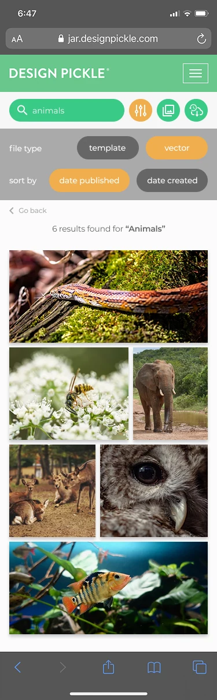
JOURNEY 02
Save and organize
Saving is treated as future intent. Collection views make saved work easier to group, manage, and retrieve, while focused tasks such as creating or editing a Collection remain close at hand.
Asset Detail → Save → Collection → Individual Collection
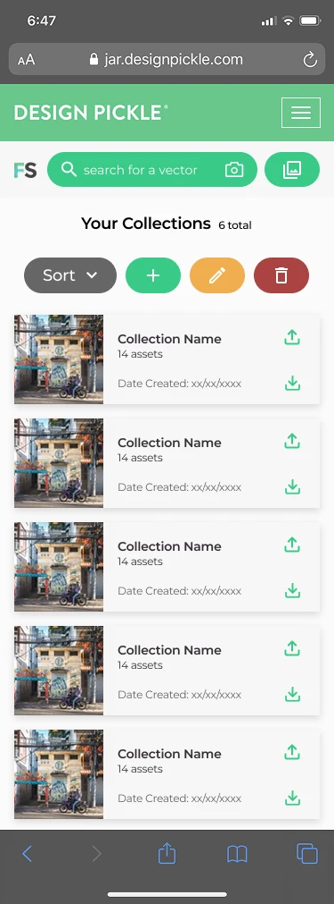
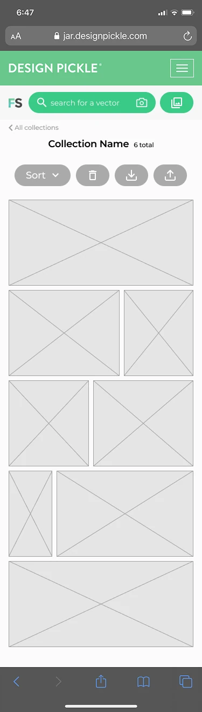
JOURNEY 03
Download and return
Download supports immediate use. Download History then preserves a route back to previously accessed assets rather than treating file access as a dead end.
Asset Detail → Download format → Download History → Prior asset
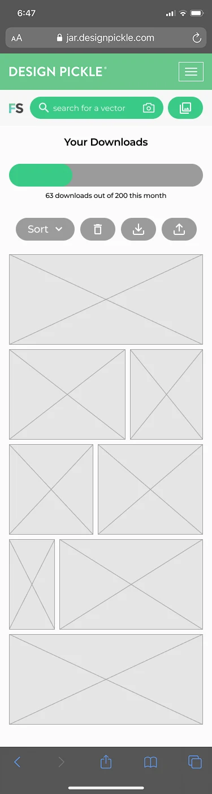
06 / Key UX decisions
Make intent clear while preserving context.
The design decisions connect what users are trying to do now with the asset organization they may need later.
Search and browsing support different modes.
Search serves a known need; themes, asset types, and new work support exploration and inspiration.
Save and Download mean different things.
Save supports future use and organization. Download supports immediate access to working files.
Asset Detail is the decision point.
Preview, context, and actions are presented together so the next step is understandable.
Collections turn saved assets into organized work.
Named Collections make future assets easier to group, manage, and retrieve than a generic saved list.
Download History is more than a transaction log.
It provides a return path to assets subscribers have already accessed.
Modals keep focused tasks in place.
Saving, editing, deleting, and choosing formats can happen without leaving the current browsing context.
07 / Final experience
A complete path through a growing creative library.
A tighter set of product details highlights the visual quality of discovery, organization, and retrieval without repeating the complete journey screens.
08 / Responsive experience
Prioritizing dense product information on mobile.
The responsive experience keeps discovery and primary actions close while adapting navigation, asset grids, and management controls to a narrower screen.
Progressive prioritization
Navigation simplificationThe expanded logged-in menu keeps Collections, Downloads, and account destinations accessible.
Action priorityAsset Detail brings the most relevant next actions into a focused mobile layout.
Content adaptationVisual results and saved assets use scannable grids while management controls stay grouped.
Readable organizationCollections and Download History preserve labels, status, and retrieval paths on smaller screens.
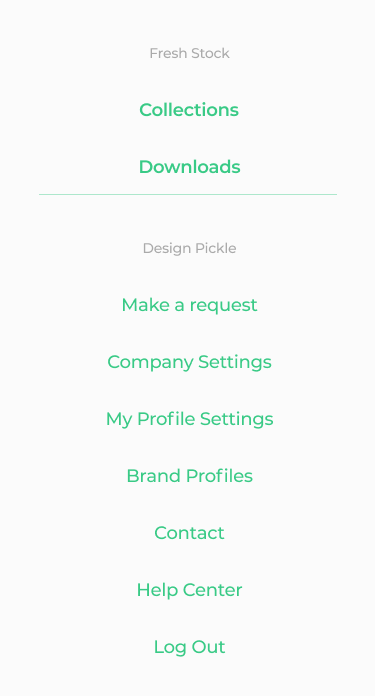
09 / UI Foundations
A coherent visual language across content and actions.
FreshStock used a small set of visual and interaction foundations to keep an image-rich product clear. These foundations describe the product UI language visible in the shipped work—not a claim of a separate, enterprise-scale design system.
Color roles
FreshStock greenPrimary action
Dark navyText and structure
Warm accentSelected states
Light surfaceContent canvas
Neutral UISecondary states
Typography and hierarchy
Page titleYour Downloads
SectionAdditional Assets in Bundle
Body / metadataPart of “Street Art” bundle
Action labelSAVE TO COLLECTION
Action hierarchy
Primary actionSecondary actionDestructive actionInactive state
Interaction principles
Recognizable previewsLet visual content lead asset scanning.
Clear action hierarchySeparate immediate, future, and destructive intent.
Consistent modal structureKeep focused tasks predictable.
Preserved contextSupport actions without losing the current asset.
10 / Reusable UI patterns
Focused patterns for recurring product tasks.
Selected modal and navigation structures use consistent hierarchy, clear actions, and a contained task scope. They supported related interactions without requiring a full-page transition.
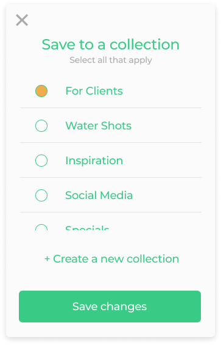
Save
Select a Collection
Choose existing destinations or move directly into creating a new one.
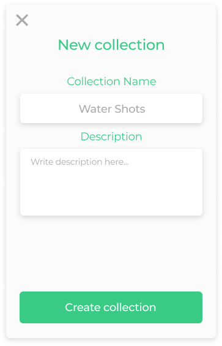
Create
New Collection
A focused name-and-description task that supports future retrieval.
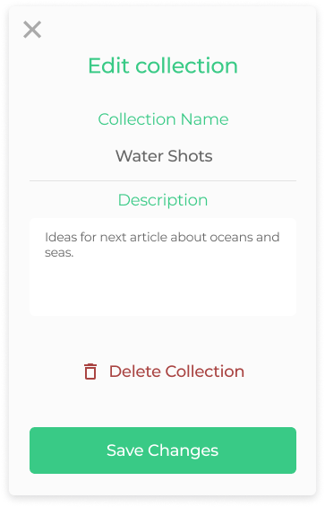
Manage
Edit Collection
Keep routine editing primary while making the destructive path distinct.
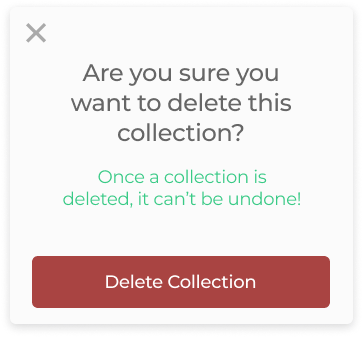
Confirm
Delete Collection
Name the consequence before the destructive action is completed.
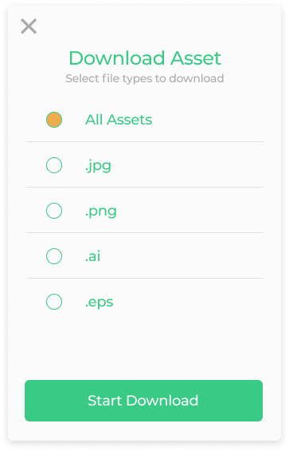
Download
Choose file formats
Make available source files visible before the download begins.
Navigate
Logged-in destinations
Connect product destinations with the wider Design Pickle account experience.
Reusable UI Patterns describes the scope accurately: recurring modal structures, action hierarchy, collection behavior, and navigation states—not ownership of a complete design system.
11 / Collaboration & handoff
Design continued through implementation.
I worked closely with the Product Manager and developers throughout the project. Handoff was an ongoing conversation about requirements, behavior, feasibility, and the quality of the implemented experience.
Screens, flows, responsive behavior, and interaction details were shared as the implementation source.
Meetings created space to explain intent, discuss requirements, and resolve behavior questions.
Builds were reviewed as the product took shape, including differences between design and implementation.
The delivered experience was checked for presentation, interaction behavior, and flow continuity.
12 / Outcome
FreshStock shipped to production.
Developed over approximately two years, the work moved through research, product design, developer collaboration, implementation review, and visual and functional QA—not only design handoff.
Discovery, browsing, search, Asset Detail, Collections, and download workflows reached production.
Mobile and responsive experiences shipped as part of the product, including logged-in navigation.
Shared interaction patterns supported saving, collection management, download, and confirmation tasks.
Design decisions continued through developer walkthroughs, build review, and QA.
13 / Reflection
Designing for what happens after discovery.
FreshStock reinforced that finding content is only one part of a useful library experience.
The larger design challenge was balancing discovery with organization: distinguishing immediate use from future intent, keeping information-dense screens understandable, and making saved or downloaded work easy to retrieve.
Working continuously with developers also made implementation review part of the design process rather than an endpoint. Today, I would keep investigating how taxonomy, filters, and personal organization should evolve as the asset library grows.